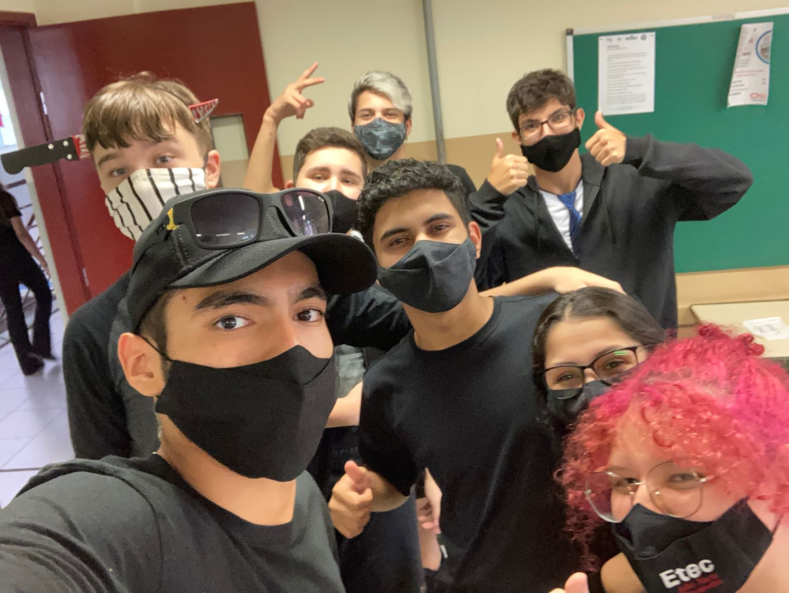
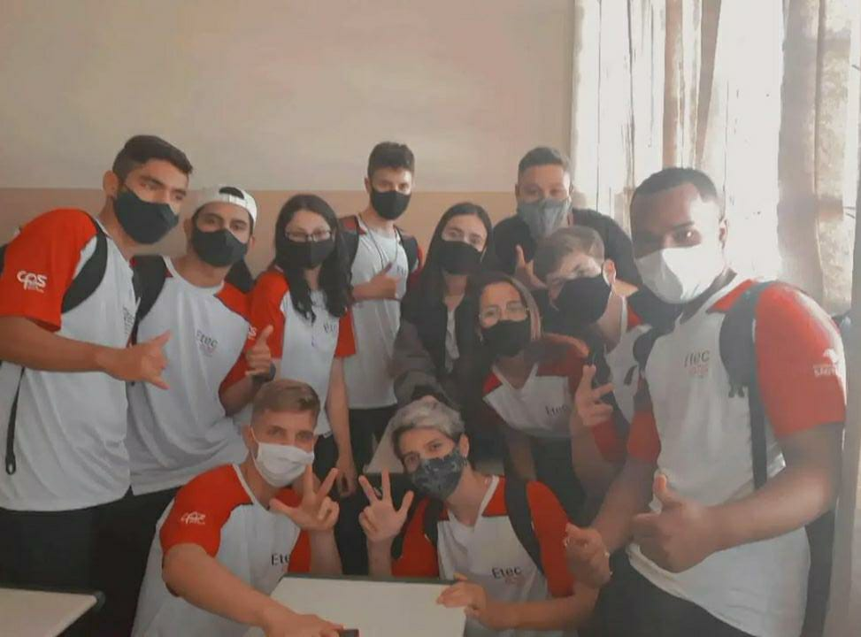
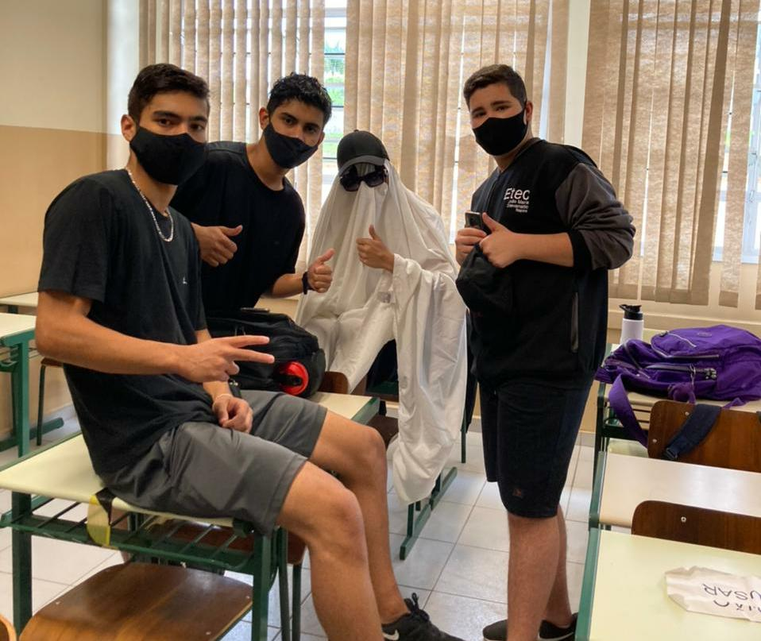
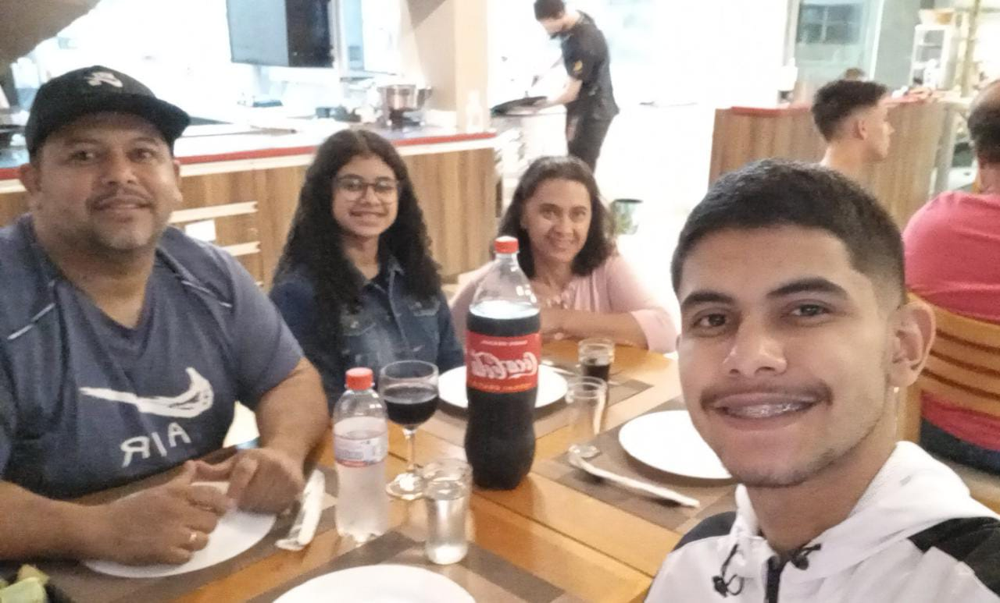
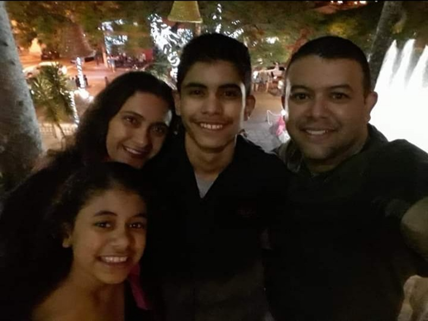
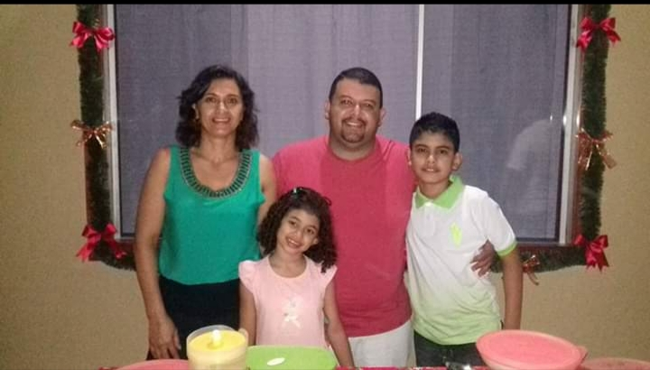

SOBRE MIM:
Olá, aqui quem fala é o Murilo, e estou muito feliz por poder compartilhar com vocês o meu tão querido site pessoal.
NOME COMPLETO : Murilo Cruz Dos Anjos
DATA DE NASCIMENTO : 16 de Abril de 2005
LOCAL DE NASCIMENTO : Guarulhos
ONDE MORO ATUALMENTE : Jacutinga
ESCOLA : Etec João Maria Stevanatto
BIOGRAFIA:
Murilo sempre foi uma pessoa cheia de qualidades e defeitos, mas sempre buscando evoluir cada dia mais. Uma pessoa que nunca se deixou levar pela opinião dos outros, por ser quem ele realmente é. Um rapaz alegre, extrovertido e esforçado. Ou seja, gosta de brincadeiras, mas sabe o limite das coisas.
Se dedicando ao máximo no presente, por sempre estar preocupado com o seu futuro. Ainda confuso em qual caminho se guiar, mas não peca por sonhos faltar. Traçando conquistas ao longo de sua jornada, sempre em busca do sucesso e felicidade.
FOTOS COM AMIGOS:
  
FOTOS COM A FAMÍLIA:
  
Desenvolvido por Murilo Anjos - 2021